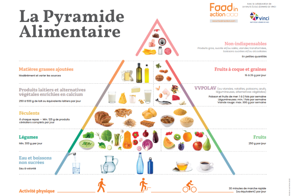

1- La catégorisation
Depuis la fin des années 1990, face aux nombreux scandales alimentaires qui ont éclaté, de la vache folle à la viande de cheval dans les lasagnes, les consommateurs de plus en plus pour d’avantage de transparence sur la composition des produits de quotidien. Avec l’ouverture des données, cette promesse de transparence s’est revivifiée. Les scores (nutri-score, éco-score, nova etc.) et plateformes (Yuka, Open Food Facts etc.) se multiplient pour rendre l’information à portée des consommateurs. Yuka compte aujourd’hui 1,5 millions de produits alimentaires et 500 000 produits cosmétiques référencés avec près de 800 nouveaux produits ajoutés chaque jour.
Pour les fondateurs de Vinted, Julie Chapon, François et Benoît Martin, l’objectif était de guider les consommateurs dans leur régime alimentaire en mettant en avant des aliments bons pour leur santé et d’inciter les producteurs industriels à jouer le jeu de la transparence. Présente à l’international, l’application mobile se présente comme indépendante, ni exploiter les données des utilisateurs pour la revente. Ainsi, Yuka génère ses revenus à partir de la version premium de l’application proposant des programmes nutritionnels personnalisés, produits dérivés et donations. L’équipe gestionnaire de l’application se compose de onze membres qui se répartissent entre pôle communication et presse et un pôle technique de développement de l’application et de gestion de la base de données à l’écoute des utilisateurs.Globalement, la base de données Yuka repose donc sur l’open data. Le système, historiquement militant, revendique des valeur de partage et de transparence de l’information. Avec celui-ci, une donnée numérique mise en circulation avec libre accès et libre usage pour l’utilisateur. Plus largement, l’open data désigne l’ouverture au grand public de données qui sont considérées d’intérêt général. N’importe qui peut utiliser ces données pour s’informer ou pour créer un service. C’est le cas de Yuka, dont le fonctionnement repose en partie sur des données fournies par Open Food Facts (OFF) en open data. En effet, l’équipe technique de Yuka commence à travailler à partir de la base de données créée en 2012 par Stéphane Gigandet car les données sont placées sous l’ « open database license ».
C’est-à-dire que tout le monde peut les réutiliser gratuitement, sans contrainte technique ou juridique. OFF est une base de données citoyenne et un projet collaboratif qui fonctionne à la manière de Wikipédia, avec l’objectif de constituer une base de données alimentaires libre et ouverte.
Yuka, dont la base de données lui est propre depuis 2018, a conservé le principe collaboratif et augmente sa taille par la contribution des utilisateurs de l’application ou de marques qui transmettent directement leurs informations nutritionnelles. La participation (ou crowdsourcing), est une alternative et un complément à l’automatisation. Si Yuka utilise la reconnaissance des information par photo, l’application excluant totalement l’entrée manuelle.
De plus, la participation permet la création de biens communs numériques et traduisent souvent l’idée de faire confiance au grand public dans la production de biens et de services numériques.
Cas pratique : comment ajouter un produit dans la base de données Yuka ?

Avant toute chose, revenons sur le fonctionnement de l’application et l’entrée de nouveaux produits. Les marques, peuvent entrer des informations produits grâce à la plateforme Alkemics mais les utilisateurs peuvent également ajouter des fiches en passant exclusivement par l’application.
1) Étapes 1-4 : scanner et photographier- ajouter des informations brutes
Après avoir scanner le code-barre, il s’agit de photographier l’emballage et le tableau nutritionnel. Un système de scan et un algorithme de reconnaissance textuelle et visuelle permet de décoder l’étiquette des valeurs énergétiques d’un produit.

2) Étapes 5-8 : sélectionner - ajouter des information sous les critères de Yuka
Il faut enfin renseigner la catégorie alimentaire.

3) Étapes 9-10 : Côté Yuka – analyse de l’information, vérification, publication ou non
L’utilisateur est tenu au courant de la notation de son produit dans les heures qui suivent par mail.

Après l’entrée des fiches produits, Yuka propose automatiquement une catégorisation selon onze classes :
- Fruits & légumes brut
- Fruits et légumes préparés
- Viandes & poisson
- Pain et viennoiseries
- Produit laitiers et alternatives
- Plats & repas préparés
- Pâtes, riz et céréales
- Epicerie salée
- Epicerie sucrée
- Boissons
- Bébé
Cette catégorisation tant à l’exhaustivité et a tendance à être présentée comme telle pour les consommateurs. Cependant, il se trouve en réalité que plusieurs catégories de produits ne peuvent pas entrer dans ce système pour des contraintes techniques.
- D’abord, les produits dans une autre langue ne peuvent être reconnus. Seuls le français, l’allemand, l’anglais, l’espagnol et l’Italien sont correctement détectés.
- Les produits n’ayant pas de code-barre, vendus au poids (fruits et légumes en vrac, traiteurs, produits de marchés etc.)
- Enfin les produits sans valeurs nutritionnelles indiquées ou non-indiqués dans un tableau ne peuvent être enregistrés et catégorisés car cette étape est obligatoire dans la saisie de nouveaux produits.
Pourtant d’autres produits étonnants sont inscrits comme les aliments pour animaux.
Enfin, la catégorisation elle-même nous interroge. Une classification trop rigide celle-ci ne permet pas à un aliment de se trouver dans plusieurs classes. D’autres catégorisations sont possible.
« On ne se dit pas on a 50 catégories, on a 50 rayons. La liste n'est pas fermée. Elle évolue tout le temps. Ça fait 10 ans qu'on rajoute des catégories dès qu'on a une trentaine de produits dans une catégorie. On regarde s’il y a pas une sous-catégorie. On fait des regroupements. Quand je disais que c'était un peu une hiérarchie,c'est pas tout à fait une hiérarchie dans le sens où une catégorie enfants peut avoir plusieurs parents Par exemple, le beurre, il va être à la fois dans les graisses et dans les produits laitiers. »
D’autres classifications d’aliments existent à l’instar de la pyramide alimentaire proposée par le Programme National Nutrition Santé français. Cette pyramide est un modèle couramment utilisé et permettant de hiérarchiser le poids des familles d’aliments dans une alimentation jugée saine.
